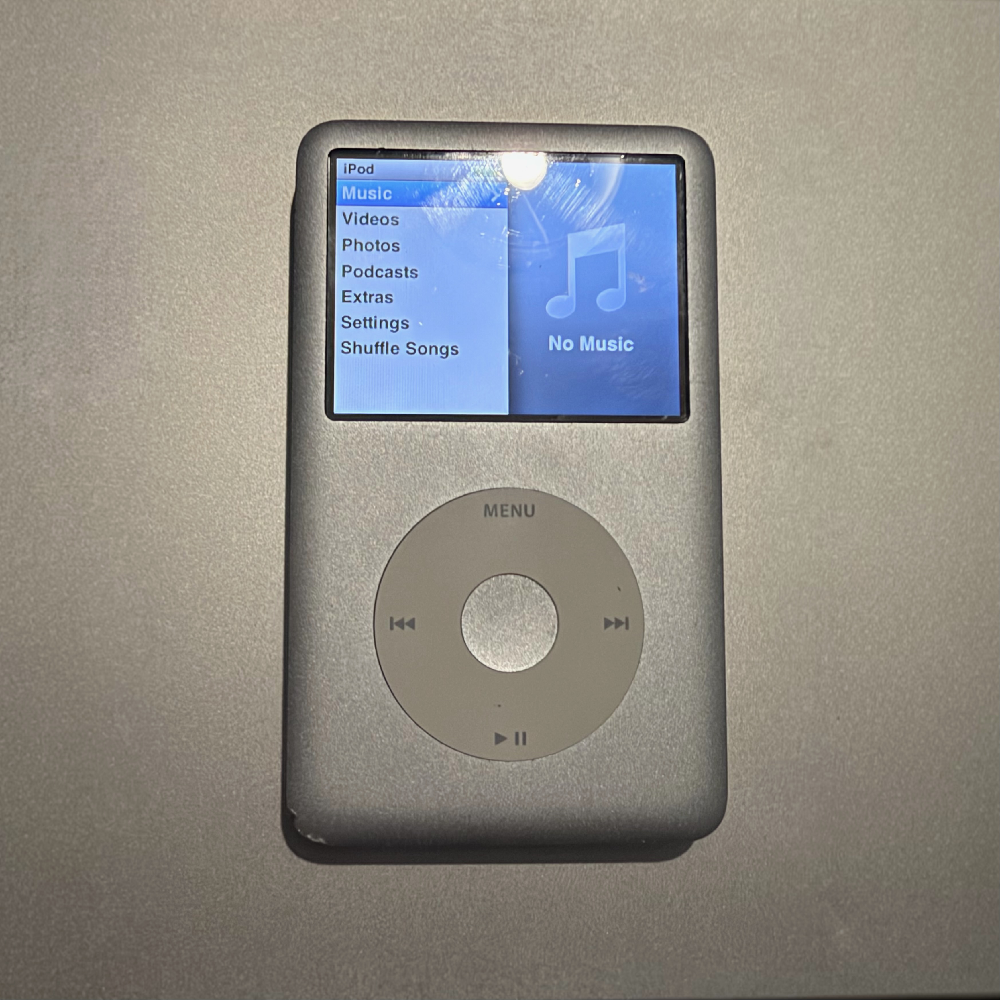
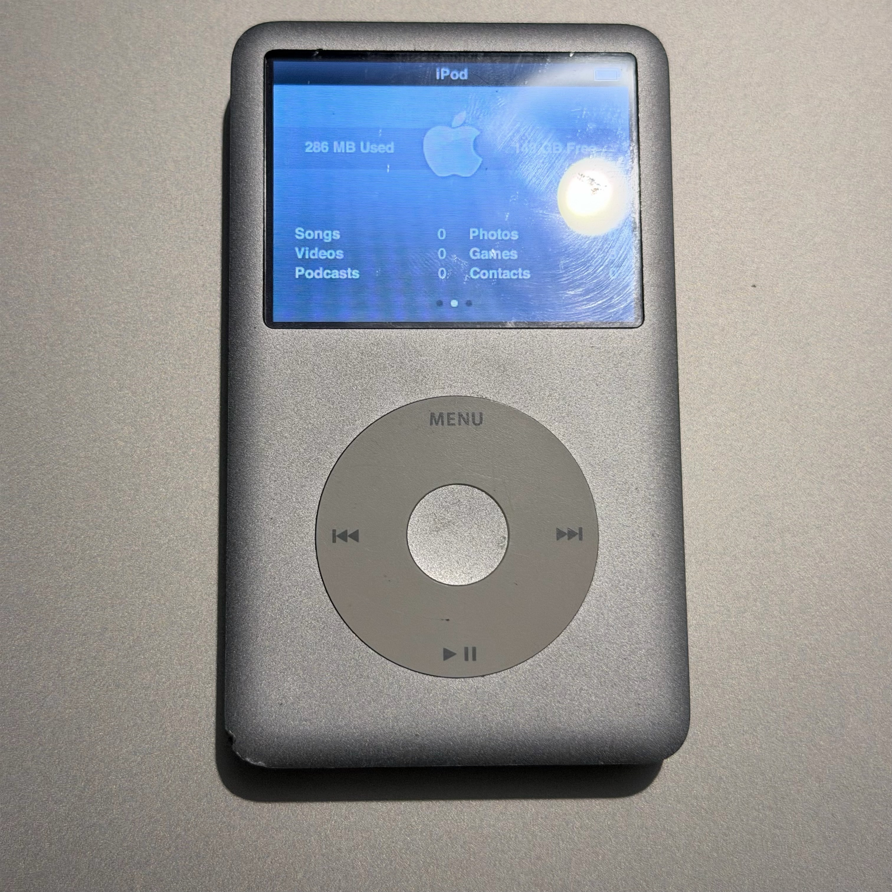
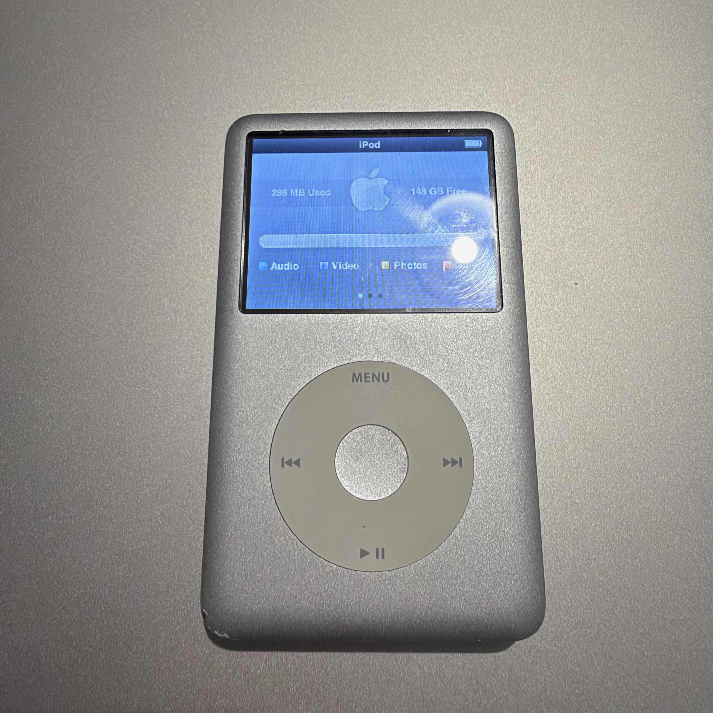
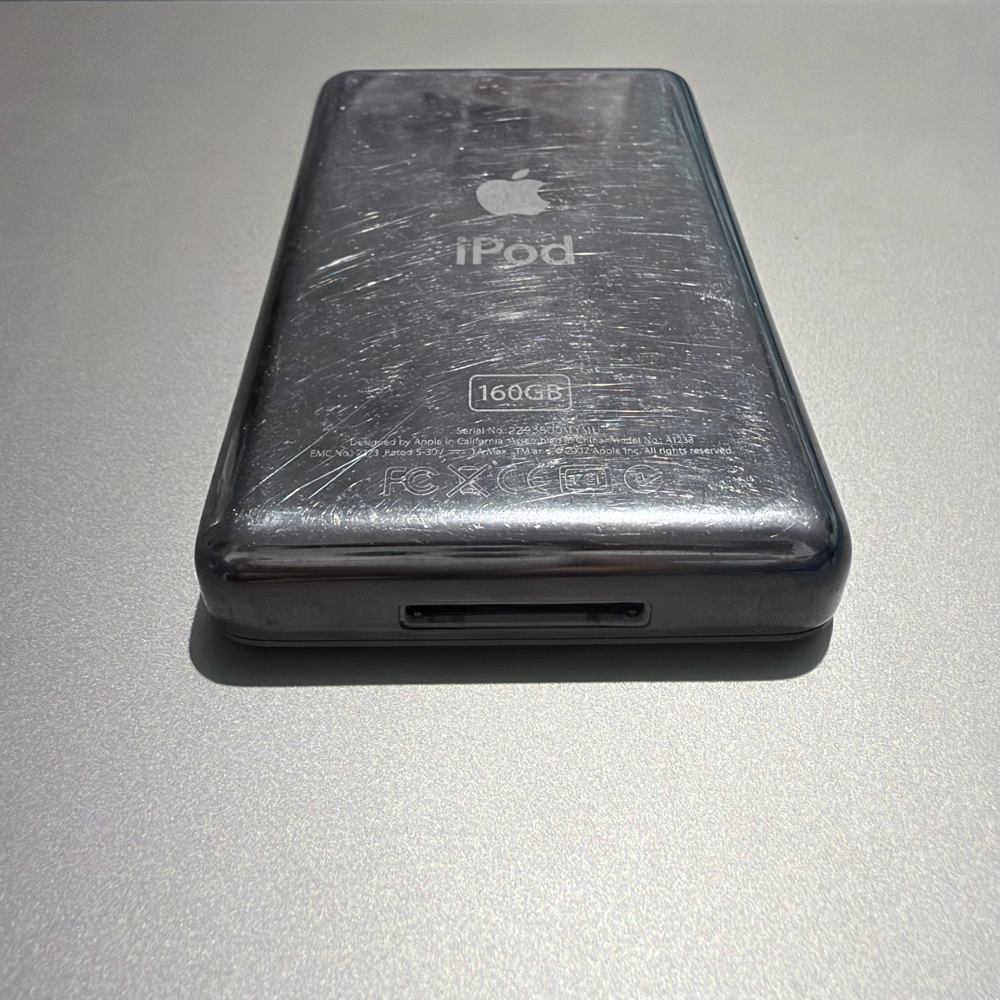
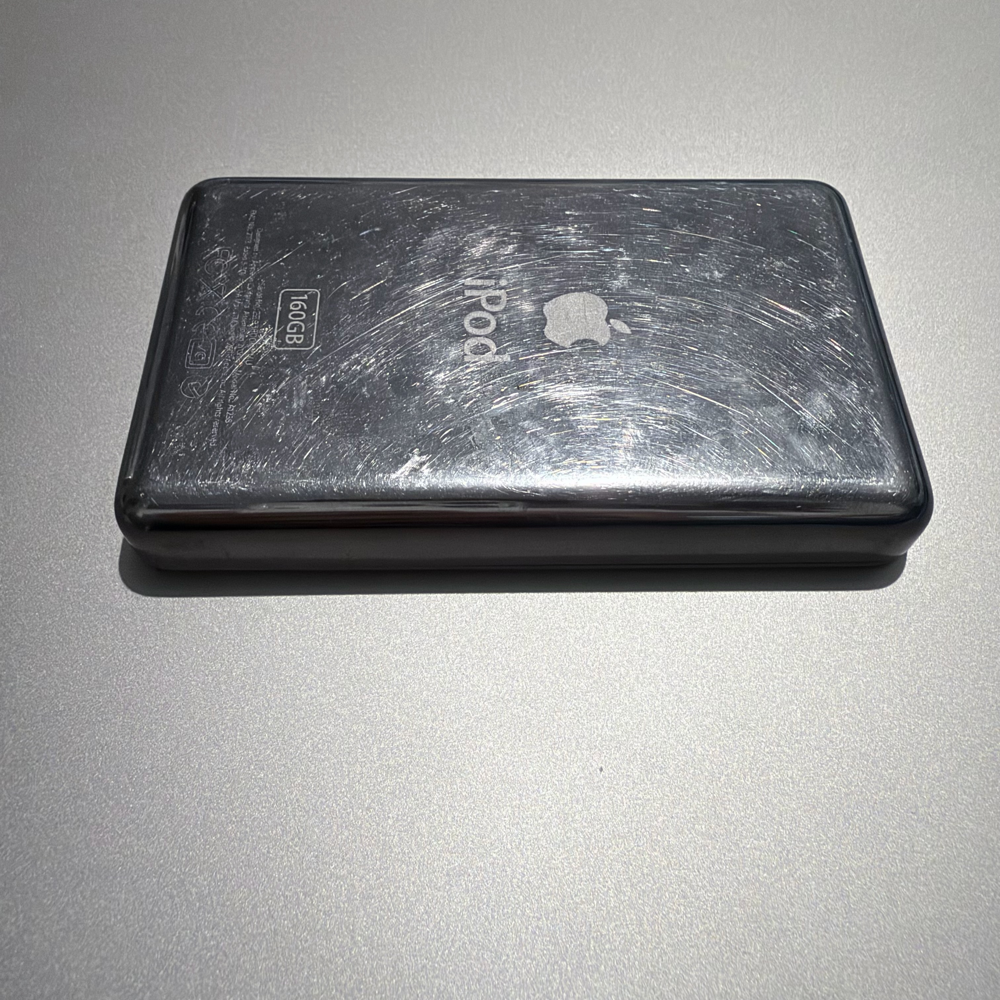
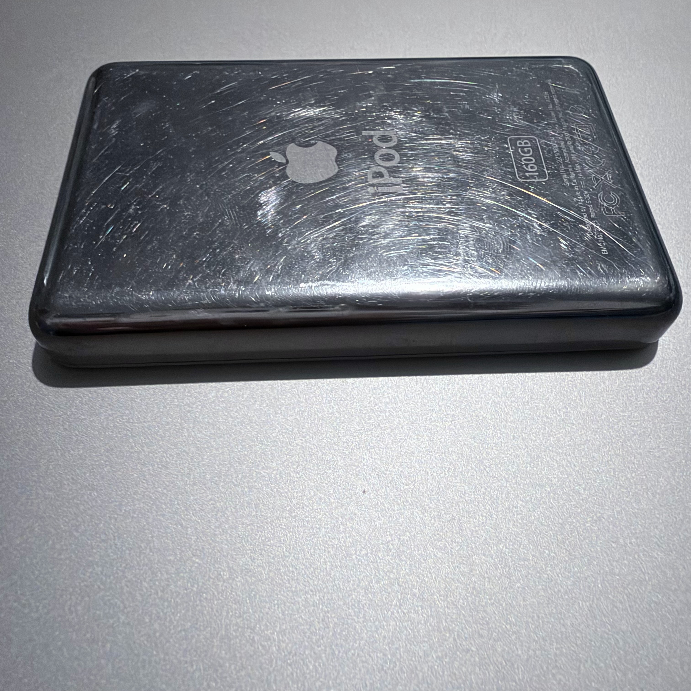
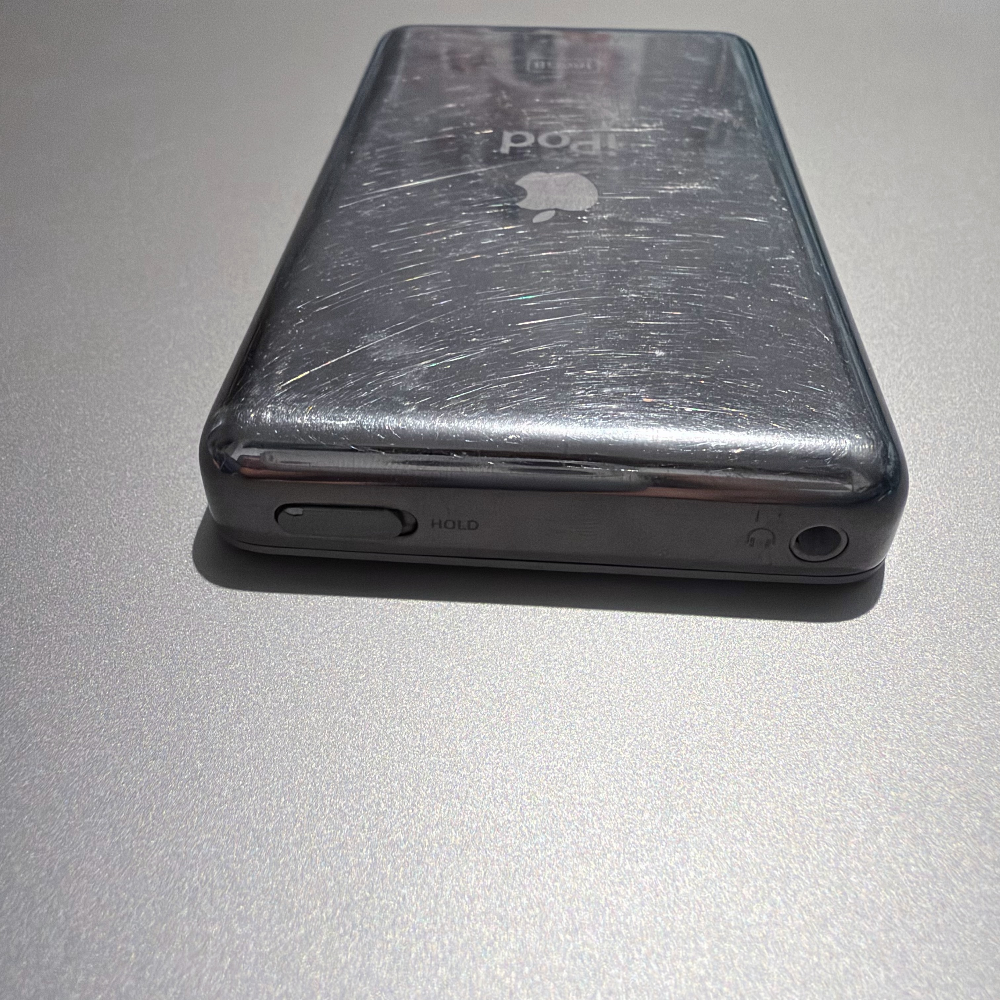
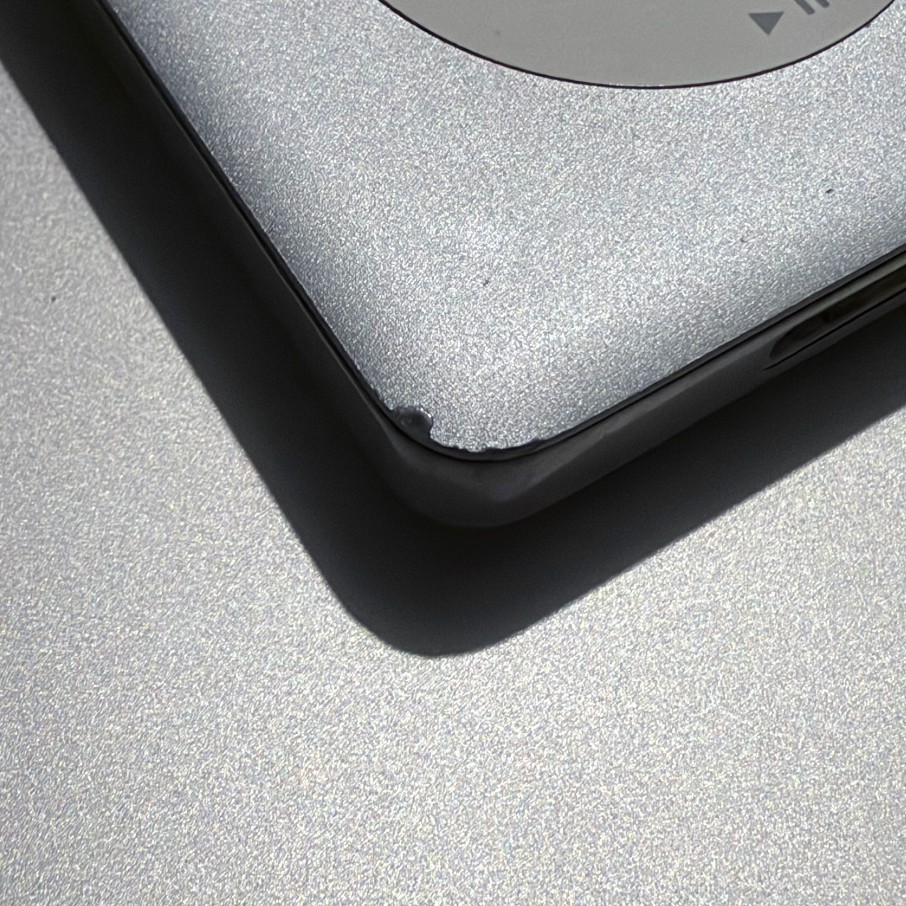
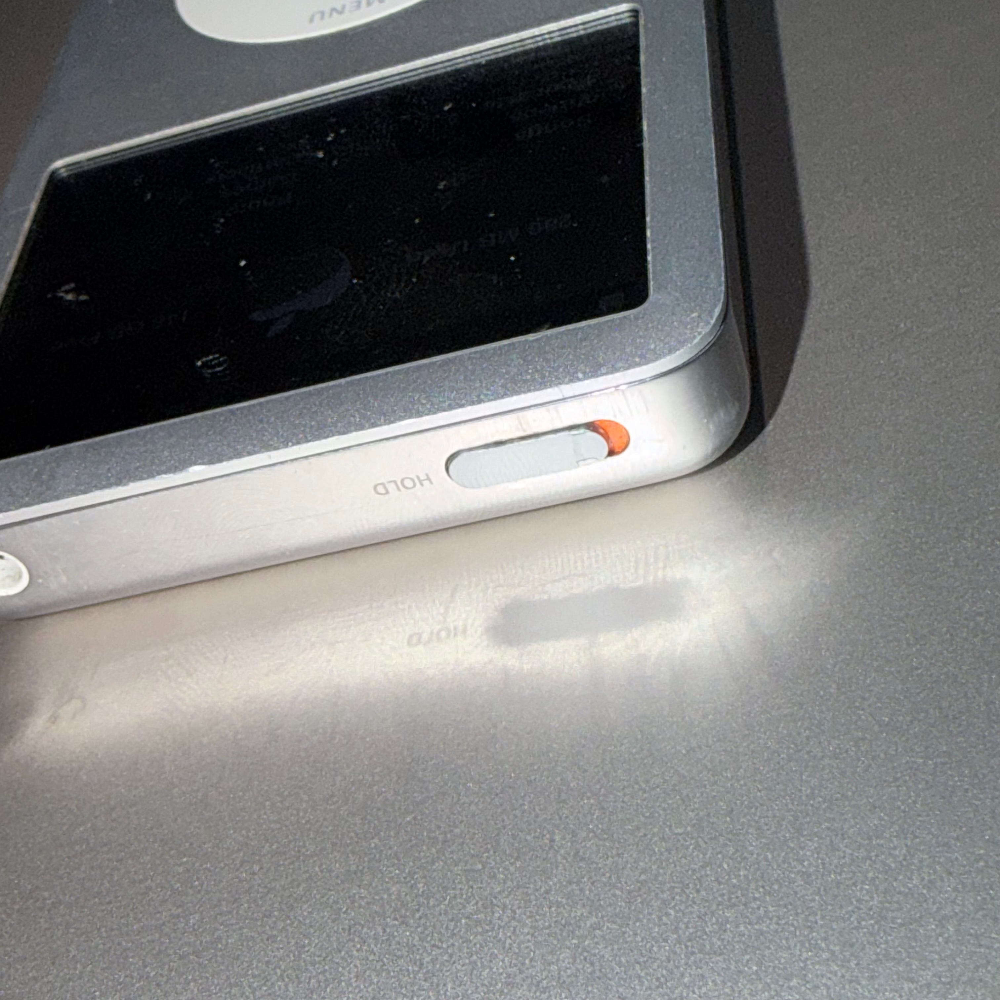

iPod Classic (6th Generation) – Silver
£75.00
- Series
- iPod
- Model
- iPod Classic (6th Generation)
- Condition
- Good
- Storage
- 160GB
Apple iPod Classic 6th Generation – 160GB – Silver
Experience music the way it was meant to be enjoyed with the iconic Apple iPod Classic.
Featuring a generous 160GB of storage, this iPod offers plenty of space for your music collection alongside the timeless design that made the iPod a classic.
With its signature click wheel and sleek silver finish, it remains one of Apple's most recognisable and sought-after devices.
Key features:
* 160GB storage capacity
* 6th Generation design
* Classic silver finish
* Iconic click wheel navigation
* Large music library capacity
* Compatible with iTunes for music synchronisation
A lovely piece of Apple's history and a great addition to any collection of vintage Apple technology.